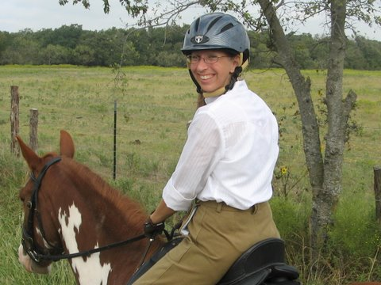

10/06/07
Hunt Trail Ride - Williams' Farm
Erika mounted up and ready for her first hunt trail ride.
Sharon getting a between-the-ears shot as we headed down the road.
Aver on Shorty following allow with Shirley.
The pavement quickly turned to a dirt track.
Erika enjoyed her ride on Danny.

Jennifer was out on Nero.
A group shot, with Erika in front, and Janet, Shirley, Aver, Mary Ann and Jennifer from left to right.
Aver on Shorty and Mary Ann on Curly.
Shirley, on her new horse Dillon, was our host.
Janet brought out her more experienced mare this ride.
Aver keeping an eye on the group behind him.
Mary Ann noticed a few interesting plants on this ride.
The cows lurking in the trees.
The horses grabbed a snack while their riders paused to chat.
Watching the cows and calves.
Shirley has 16 or so cows and a bull on the place.
Soldier, the bull.
We wondered if Shorty remembered the farm. He'd been here years ago with Shirley.
The trail ride was another good experience for these two horses, who are going into their first season of hunting.
Proof that Sharon was behind the camera today.
Erika won the gate prize, the metal pumpkin in the background.